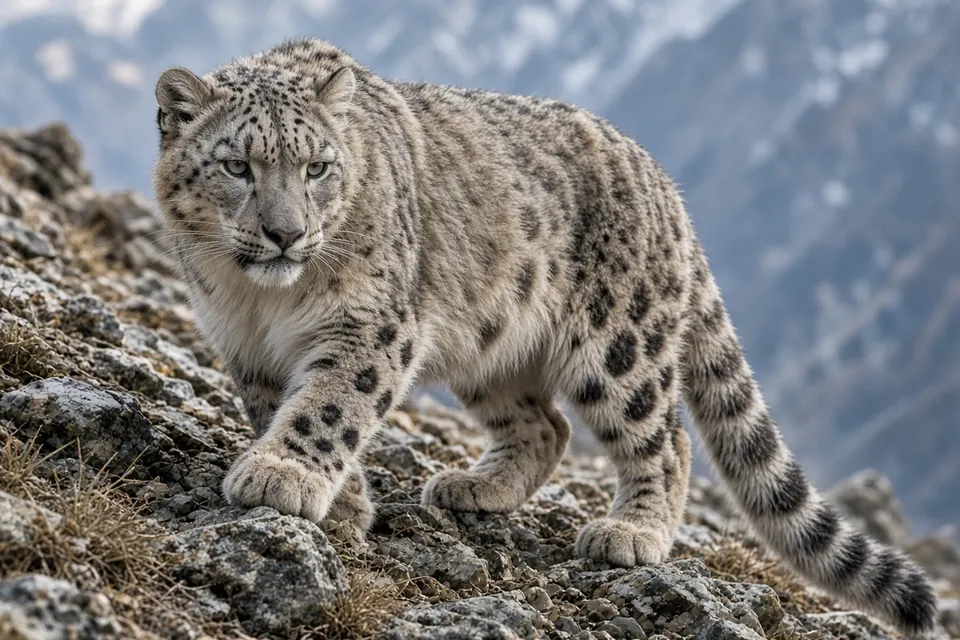

Home › Blog › How do snow leopards survive at high altitude?
How Do Snow Leopards Survive at High Altitude?
Snow leopards survive high in the mountains of Asia with a body built for thin, cold air and steep rock. An enlarged nasal cavity warms each breath, a well developed chest helps draw in oxygen, and the thickest fur of any big cat, a long tail and wide paws handle the cold, snow and cliffs.

How high do snow leopards live?
The Snow Leopard Conservancy says snow leopards live in the mountains of Central, South and East Asia at elevations from about 500 to 5,800 meters (1,600 to 19,000 feet), and can even be found at the base of Mount Everest. WWF Canada describes them living at altitudes of up to 5,500 meters in the cold deserts of High Asia.
Within that range they favor high, steep, rocky places with few plants. The Conservancy notes that they live in the alpine zone in summer and move down into the subalpine zone in winter, following prey such as bharal (blue sheep) and ibex that descend to find grazing.
Breathing thin, cold air
High mountain air is cold, dry and holds less oxygen. According to the Snow Leopard Conservancy, the snow leopard skull is broader and more vaulted than usual, with an enlarged nasal cavity and a wider nasal opening. Together with a high concentration of small red blood cells, this helps the cat take in as much oxygen as possible from each breath and warm and humidify the air on the way in.
The Snow Leopard Trust describes the same feature: a wide, short nasal cavity warms the air before it reaches the lungs. The Conservancy also says snow leopards have a well developed chest that helps them draw oxygen from the thin air.
Staying warm
The Snow Leopard Conservancy says snow leopards have the longest and thickest fur of any big cat. Its educational pages describe long body hair over a dense, woolly underfur, and the Snow Leopard Trust adds that the coat grows extra thick in winter. Small, rounded ears lose less heat, according to the Trust.
The tail is part of the heating system too. Both organizations describe snow leopards wrapping their long, thick tail around their body, and the Conservancy says it can work like a muffler or even a mat to rest the paws on. You can read more in our article on why snow leopards have such long tails.
Moving through snow and cliffs
The Conservancy gives snow leopard paws as about 10 by 8 centimeters (4 by 3 inches), and both conservation groups describe them as natural snowshoes that stop the cat sinking into deep snow and give grip on slopes.
Snow leopards have short, strong front limbs and longer hind limbs. The Snow Leopard Trust says this build helps launch them up to about 10 meters (30 feet) in one leap. The tail, which the Conservancy says is the longest of any cat relative to body size at about 80 to 100 centimeters, acts as a counterbalance and rudder as they run and jump across rocky slopes.
Hiding in plain sight
Smoky gray fur with dark rosettes blends into rock and snow. WWF Canada says this camouflage, together with their remote habitat and secretive habits, is why so few people have seen a snow leopard in the wild and why they are called the ghost of the mountains. Good camouflage also helps them get close to prey on open slopes.
Frequently asked questions
How high can snow leopards live?
The Snow Leopard Conservancy gives a range of about 500 to 5,800 meters (1,600 to 19,000 feet) above sea level.
How do snow leopards breathe thin air?
An enlarged nasal cavity, a wide nasal opening, a well developed chest and many small red blood cells help them take in oxygen and warm the air they breathe.
How do snow leopards keep warm?
They have the longest and thickest fur of any big cat, a woolly underfur, small rounded ears and a long tail they wrap around themselves.
Why do snow leopards have big paws?
Their wide paws work like snowshoes, spreading their weight on snow and giving grip on steep, rocky ground.
Do snow leopards stay at the same altitude all year?
No. They tend to live higher in summer and move lower in winter, following their prey down to winter grazing.
Cite this page
APA: BigCatWise. (2026, November 12). How do snow leopards survive at high altitude?. https://bigcatwise.com/blog/how-do-snow-leopards-survive-at-high-altitude.html
MLA: "How do snow leopards survive at high altitude?." BigCatWise, 12 Nov. 2026, bigcatwise.com/blog/how-do-snow-leopards-survive-at-high-altitude.html.
Chicago: BigCatWise. "How do snow leopards survive at high altitude?." Last modified November 12, 2026. https://bigcatwise.com/blog/how-do-snow-leopards-survive-at-high-altitude.html.
Please check the date you accessed the page and adjust to your teacher's or journal's style guide.